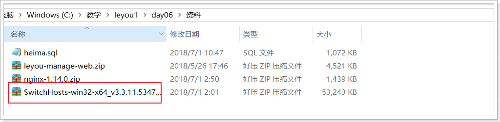
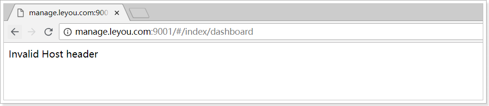
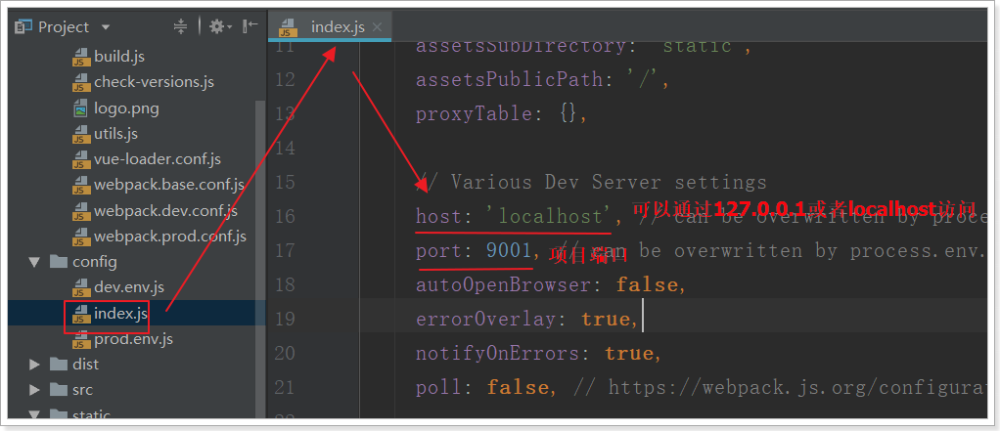
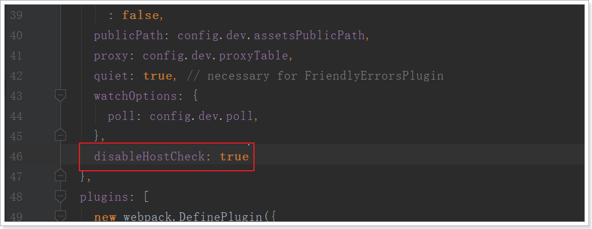
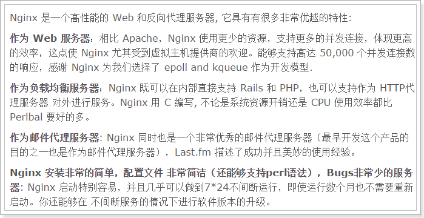

实际开发中,有各种各样的环境,为了保证所有环境的一致，我们会在各种环境下都使用域名来访问。主要有
域名解析问题
端口问题
之后还会出现跨域访问问题
1.使用域名访问本地项目
1.1.统一环境
我们现在访问页面使用的是：http://localhost:9001
有没有什么问题？
实际开发中，会有不同的环境：
- 开发环境：自己的电脑
- 测试环境：提供给测试人员使用的环境
- 预发布环境：数据是和生成环境的数据一致，运行最新的项目代码进去测试
- 生产环境：项目最终发布上线的环境
如果不同环境使用不同的ip去访问，可能会出现一些问题。为了保证所有环境的一致，我们会在各种环境下都使用域名来访问。
我们将使用以下域名：
- 主域名是：www.leyou.com，leyou.com
- 管理系统域名：manage.leyou.com
- 网关域名：api.leyou.com
- …
但是最终，我们希望这些域名指向的还是我们本机的某个端口。
那么，当我们在浏览器输入一个域名时，浏览器是如何找到对应服务的ip和端口的呢？
1.2.域名解析
一个域名一定会被解析为一个或多个ip。这一般会包含两步：
本地域名解析
浏览器会首先在本机的hosts文件中查找域名映射的IP地址，如果查找到就返回IP ，没找到则进行域名服务器解析，一般本地解析都会失败，因为默认这个文件是空的。
- Windows下的hosts文件地址：C:/Windows/System32/drivers/etc/hosts
- Linux下的hosts文件所在路径： /etc/hosts
样式：
# My hosts 127.0.0.1 localhost域名服务器解析
本地解析失败，才会进行域名服务器解析，域名服务器就是网络中的一台计算机，里面记录了所有注册备案的域名和ip映射关系，一般只要域名是正确的，并且备案通过，一定能找到。
1.3.解决域名解析问题
我们不可能去购买一个域名，因此我们可以伪造本地的hosts文件，实现对域名的解析。修改本地的host为：
127.0.0.1 api.leyou.com
127.0.0.1 manage.leyou.com
这样就实现了域名的关系映射了。
每次在C盘寻找hosts文件并修改是非常麻烦的，给大家推荐一个快捷修改host的工具，在课前资料中可以找到：

解压，运行exe文件，效果：

我们添加了两个映射关系（中间用空格隔开）：
- 127.0.0.1 api.leyou.com ：我们的网关Zuul
- 127.0.0.1 manage.leyou.com：我们的后台系统地址
现在，ping一下域名试试是否畅通：

OK！
通过域名访问：

原因：我们配置了项目访问的路径，虽然manage.leyou.com映射的ip也是127.0.0.1，但是webpack会验证host是否符合配置。

在webpack.dev.conf.js中取消host验证：disableHostCheck: true

重新执行npm run dev，刷新浏览器：
OK！
1.4.nginx解决端口问题
域名问题解决了，但是现在要访问后台页面，还得自己加上端口：http://manage.taotao.com:9001。
这就不够优雅了。我们希望的是直接域名访问：http://manage.taotao.com。这种情况下端口默认是80，如何才能把请求转移到9001端口呢？
这里就要用到反向代理工具：Nginx
1.4.1.什么是Nginx

nginx可以作为web服务器，但更多的时候，我们把它作为网关，因为它具备网关必备的功能：
- 反向代理
- 负载均衡
- 动态路由
- 请求过滤
1.4.2.nginx作为web服务器
Web服务器分2类：
- web应用服务器，如：
- tomcat
- resin
- jetty
- web服务器，如：
- Apache 服务器
- Nginx
- IIS
区分：web服务器不能解析jsp等页面，只能处理js、css、html等静态资源。
并发：web服务器的并发能力远高于web应用服务器。
1.4.3.nginx作为反向代理
什么是反向代理？
- 代理：通过客户机的配置，实现让一台服务器代理客户机，客户的所有请求都交给代理服务器处理。
- 反向代理：用一台服务器，代理真实服务器，用户访问时，不再是访问真实服务器，而是代理服务器。
nginx可以当做反向代理服务器来使用：
- 我们需要提前在nginx中配置好反向代理的规则，不同的请求，交给不同的真实服务器处理
- 当请求到达nginx，nginx会根据已经定义的规则进行请求的转发，从而实现路由功能
利用反向代理，就可以解决我们前面所说的端口问题，如图

1.4.4.安装和使用
安装
安装非常简单，把课前资料提供的nginx直接解压即可，绿色免安装，舒服！
我们在本地安装一台nginx：

解压后，目录结构：

- conf：配置目录
- contrib：第三方依赖
- html：默认的静态资源目录，类似于tomcat的webapps
- logs：日志目录
- nginx.exe：启动程序。可双击运行，但不建议这么做。
反向代理配置
示例：

nginx中的每个server就是一个反向代理配置，可以有多个server
完整配置：
#user nobody;
worker_processes 1;
events {
worker_connections 1024;
}
http {
include mime.types;
default_type application/octet-stream;
sendfile on;
keepalive_timeout 65;
gzip on;
server {
listen 80;
server_name manage.leyou.com;
proxy_set_header X-Forwarded-Host $host;
proxy_set_header X-Forwarded-Server $host;
proxy_set_header X-Forwarded-For $proxy_add_x_forwarded_for;
location / {
proxy_pass http://127.0.0.1:9001;
proxy_connect_timeout 600;
proxy_read_timeout 600;
}
}
server {
listen 80;
server_name api.leyou.com;
proxy_set_header X-Forwarded-Host $host;
proxy_set_header X-Forwarded-Server $host;
proxy_set_header X-Forwarded-For $proxy_add_x_forwarded_for;
location / {
proxy_pass http://127.0.0.1:10010;
proxy_connect_timeout 600;
proxy_read_timeout 600;
}
}
}
使用
nginx可以通过命令行来启动，操作命令：
- 启动：
start nginx.exe - 停止：
nginx.exe -s stop - 重新加载：
nginx.exe -s reload
启动过程会闪烁一下，启动成功后，任务管理器中会有两个nginx进程：
1.5.测试
启动nginx，然后用域名访问后台管理系统：

现在实现了域名访问网站了，中间的流程是怎样的呢？

浏览器准备发起请求，访问http://mamage.leyou.com，但需要进行域名解析
优先进行本地域名解析，因为我们修改了hosts，所以解析成功，得到地址：127.0.0.1
请求被发往解析得到的ip，并且默认使用80端口：http://127.0.0.1:80
本机的nginx一直监听80端口，因此捕获这个请求
nginx中配置了反向代理规则，将manage.leyou.com代理到127.0.0.1:9001，因此请求被转发
后台系统的webpack server监听的端口是9001，得到请求并处理，完成后将响应返回到nginx
nginx将得到的结果返回到浏览器